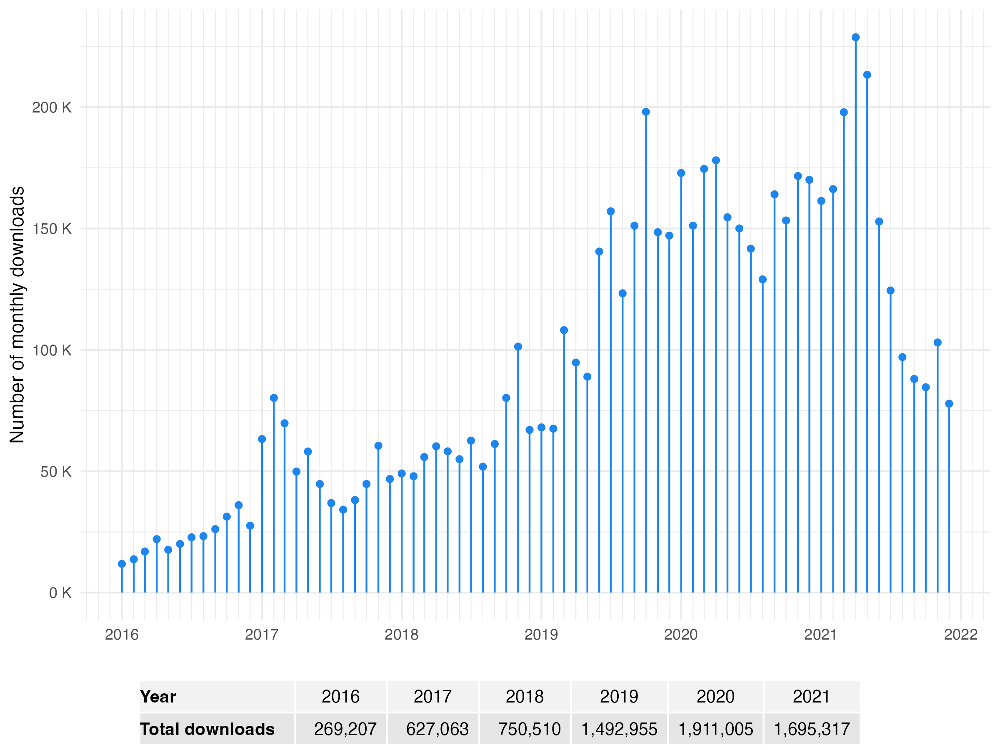

install.packages("mclust")1 Introduction
Model-based clustering and classification methods provide a systematic statistical modeling framework for cluster analysis and classification, allowing the problems of choosing or developing an appropriate clustering or classification method to be understood within the context of statistical modeling. This chapter introduces model-based clustering and finite mixture modeling by providing historical background and an overview of the mclust software for the R statistical environment.
1.1 Model-Based Clustering and Finite Mixture Modeling
Cluster analysis is the automatic categorization of objects into groups based on their measured characteristics. This book is about model-based approaches to cluster analysis and their implementation. It is also about how these approaches can be applied to classification and density estimation.
The grouping of objects based on what they have in common is a human universal and is inherent in language itself. Plato formalized the idea with his Theory of Forms, and Aristotle may have been the first to implement it empirically, classifying animals into groups based on their characteristics in his History of Animals. This was extended by Linneaus in the 18th century with his system of biological classification or taxonomy of animals and plants.
Aristotle and Linneaus classified objects subjectively, but cluster analysis is something more, using systematic numerical methods. It seems to be have been invented by Czekanowski (1909), using measures of similarity between objects based on multiple measurements. In the 1950s, there was renewed interest in the area due to the invention of new hierarchical clustering methods, including the single, average and complete linkage methods.
These methods are heuristic and algorithmic, leaving several key questions unanswered, such as: Which clustering method should we use? How many clusters are there? How should we treat outliers — objects that do not fall into any group? How should we assess uncertainty about an estimated clustering partition?
Early clustering developments were largely separate from mainstream statistics, much of which was based on a probability model for the data. The main statistical model for clustering is a finite mixture model, in which each group is modeled by its own probability distribution. The first method of this kind was latent class analysis for multivariate discrete data, developed by Paul Lazarsfeld (Lazarsfeld 1950a, 1950b).
The most popular model for clustering continuous-valued data is the mixture of multivariate normal distributions, introduced for this purpose by John Wolfe (Wolfe 1963, 1965, 1967, 1970), which is the main focus of this book. This modeling approach reduces the questions we mentioned to standard statistical problems such as parameter estimation and model selection. Different clustering methods often correspond approximately to different mixture models, and so choosing a method can often be done by selecting the best model. Each number of clusters corresponds to a different mixture model, so that choosing the number of clusters also becomes a model selection problem. Outliers can also be accounted for in the probability model.
1.2 mclust
mclust (Fraley, Raftery, and Scrucca 2022) is a popular R (R Core Team 2022) package for model-based clustering, classification, and density estimation based on finite Gaussian mixture models (GMMs). It provides an integrated approach to finite mixture models, with functions that combine model-based hierarchical clustering, the EM (Expectation-Maximization) algorithm for mixture estimation (Dempster, Laird, and Rubin 1977; McLachlan and Krishnan 2008), and several tools for model selection. A variety of covariance structures and cross-component constraints are available (see Section 2.2.1). Also included are functions for performing individual E and M steps, for simulating data from each available model, and for displaying and visualizing fitted models along with the associated clustering, classification, and density estimation results. The most recent versions of the package provide dimension reduction for visualization, resampling-based inference, additional model selection criteria, and more options for initializing the EM algorithm. A web page for the mclust package, and other related R packages, can be accessed at the URL https://mclust-org.github.io.
mclust was first developed in 1991 by Chris Fraley and Adrian Raftery for model-based hierarchical clustering with geometric constraints (Banfield and Raftery 1993), and subsequently expanded to include constrained Gaussian mixture modeling via EM (Celeux and Govaert 1995). This extended the original methodology in John Wolfe’s NORMIX software (Wolfe 1967) by including a range of more parsimonious and statistically efficient models, and by adding methods for choosing the number of clusters and the best model, and for identifying outliers. mclust was originally implemented in the S-Plus statistical computing environment, calling Fortran for numerical operations, and using the BLAS and LAPACK numerical subroutines, which at the time were not widely available outside of Fortran. It was later ported to R by Ron Wehrens.
Earlier versions of the package were described in Fraley and Raftery (1999), Fraley and Raftery (2003), and Fraley et al. (2012). More recent versions of the package are described in Scrucca et al. (2016). The current version at the time of writing is 6.1.2.
mclust offers a comprehensive strategy for clustering, classification, and density estimation, and is in increasingly high demand as shown in Figure 1.1. This graph shows the monthly downloads from the RStudio CRAN mirror over the last few years, with figures calculated using the database provided by the R package cranlogs (Csárdi 2019).

1.3 Overview
mclust currently includes the following features:
Normal (Gaussian) mixture modeling via EM for fourteen specifications of covariance structures and cross-component constraints (structured GMMs).
Simulation from all available model specifications.
Model-based clustering that combines model fitting via structured GMMs with model selection using BIC and other options.
Density estimation using GMMs.
Methods for combining mixture components for clustering.
Discriminant analysis (classification) based on structured GMMs (EDDA, MclustDA) and semi-supervised classification.
Dimension reduction methods for model-based clustering and classification.
Displays, including uncertainty plots, random projections, contour and perspective plots, classification plots, and density curves in one and two dimensions.
mclust is a package for the R language available on CRAN at https://cran.r-project.org/web/packages/mclust and licensed under the GPL https://www.gnu.org/licenses/gpl.html. There are ready to install versions, both in binary and in source format, for several machines and operating systems. The simplest way to install the latest version of mclust from CRAN is to use the following command from the R console:
Once the package is installed, it can be loaded into an R session using the command:
1.3.1 Color-Blind Accessibility
mclust includes various options to accommodate color-blind users. For details, see Section 6.6.
1.4 Organization of the Book
The book is organized as follows. Chapter 2 gives a general introduction to finite mixture models and the special case of Gaussian mixture models (GMMs) which is emphasized in this book. It describes common methods for parameter estimation and model selection.
Chapter 3 describes the general methodology for model-based clustering, including model estimation and selection. It discusses algorithm initialization at some length, as this is a major issue for model-based clustering.
Chapter 4 describes mixture-based classification or supervised learning. It describes various ways of assessing classifier performance, and also discusses semi-supervised classification, in which only some of the training data have known labels.
Chapter 5 describes methods for model-based univariate and multivariate density estimation. Chapter 6 describes ways of visualizing the results of model-based clustering and discusses the underlying considerations.
Finally, Chapter 7 concludes by discussing a range of other issues, including accounting for outliers and noise. It describes Bayesian methods for avoiding the singularities that can arise in mixture modeling by adding a prior. It also describes two approaches to the common situation where clusters are not Gaussian: using an entropy criterion to combine GMM mixture components and identifying connected components. Simulation from mixture models is also discussed briefly, as well as handling large datasets, high-dimensional data, and missing data.